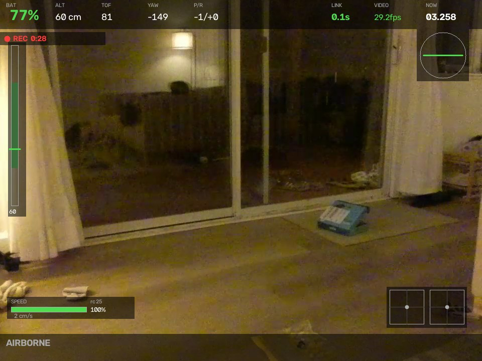
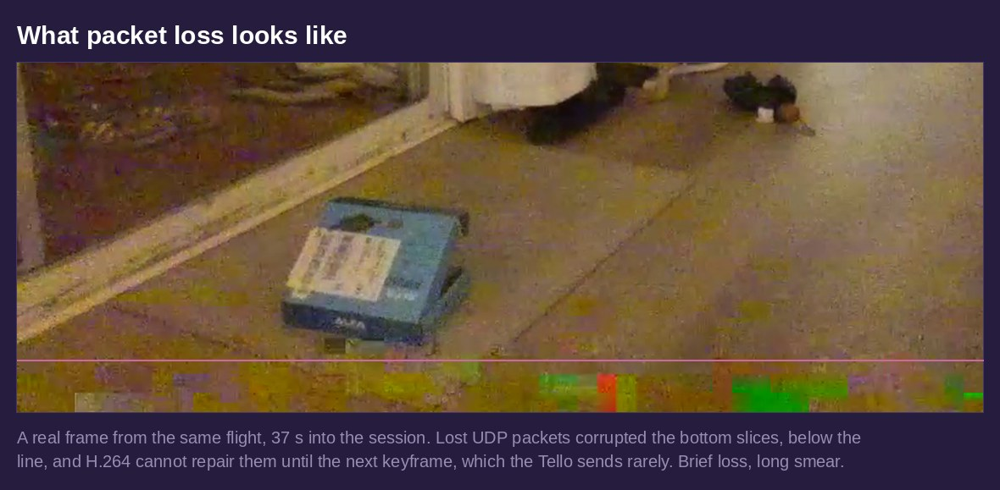
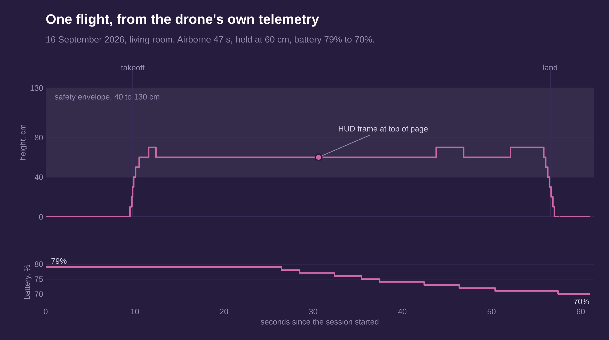

Tello Mapping Drone
A Ryze Tello that is meant to map an apartment on its own, with a language model deciding where to look next. The drone itself stays a dumb radio airframe. Everything runs on a Mac, talking to the Tello over its own Wi-Fi.
Status, stated up front: Phase 0 of 7 is built and flown. That is the radio link, the safety envelope, live video, keyboard teleop with a kill switch, a flight recorder and a preflight check, all validated on real hardware with 203 tests behind them. Perception, mapping and the planner are designed in detail and not built yet. This page covers both and keeps them apart.

The project's own HUD, re-rendered over a frame recorded 30 seconds into a real flight, from the telemetry logged at that instant. 60 cm up, battery 77%, telemetry 0.1 s old. It happens to be looking at a glass door, which is exactly the surface the plan flags as a trap for monocular depth.
The design: every layer at its own speed
The architecture starts from one rule: the language model never flies the drone. It runs about once every ten seconds, asynchronously, and only ever picks goals and names rooms. A navigator executes those goals, and a safety layer underneath can veto anything either of them asks for. If a model call is slow or fails, nothing waits on it: the navigator keeps its last goal and falls back to plain frontier exploration.

Two depth models, one ruler
The Tello has no forward sensors, so all depth has to come from its single camera, and neither of the obvious models works alone. Depth Anything V2 Small runs at about 20 Hz but outputs relative depth with no units: "1.4" could be a metre or a room. Apple's Depth Pro outputs real metres but takes one to three seconds a frame. Drive a control loop from that, plus the video latency, and the drone reacts several seconds after the world changed. That is not obstacle avoidance, it is documenting a collision.
So both run. Relative depth differs from metric depth by very nearly a scale and a shift, so every couple of seconds Depth Pro measures one frame in metres, a least-squares fit against the fast model on that same frame solves for those two numbers, and the next forty fast frames convert to metres for free. Metric depth at 20 Hz out of a 0.5 Hz model.
Pose comes from ArUco markers taped to door frames rather than from SLAM. The drone maps stop-and-go: fly to a station, hover, sweep 360° in yaw, move on. Hovering makes Depth Pro's slowness free, yaw is the Tello's most repeatable motion, and a full sweep almost always catches a marker, so drift resets at every station without any loop closure.
Phase 0: what real hardware found
Three bugs turned up within an hour of the drone being switched on, and none of them would have shown up without it:
- 32 bytes.
-probesize 32gave ffmpeg thirty-two bytes to find the H.264 headers. Replaced by declaring the format outright, so there is nothing to probe. - The short read. An unbuffered pipe returns at most one pipe buffer per read, 64 KiB on macOS, against a 2 MiB frame. The first read of every frame was always short, and the code treated short as end of stream. Video could never have worked, on any machine.
- Vanishing installs. The editable install kept disappearing. It was sidestepped at the time and traced later: iCloud was evicting files from the Desktop folder the checkout lived in. The README now says to keep it out of synced folders.
What actually cracked the second one was a diagnostic, not a guess. A small tool split "no video" into is the drone sending versus can ffmpeg decode it, and seeing 364 KiB/s arriving killed the theory that macOS permissions were blocking it. Its reader happened to loop until a frame was complete, which is the only reason it decoded frames the app could not, and that accident isolated the bug. Diagnostics that split a problem in half beat guessing, and they are worth writing.
Getting video to work at all
The next two days went on the video pipe, and most of the lessons were about measuring instead of trusting folklore. The usual low-latency ffmpeg flags were the problem, not the fix: with all three on the stream ran at 0.2 fps, with all three off at 26. Small UDP buffers looked like a latency win and were the opposite, 2 MB gave 0.2 fps and 5 MB gave 27.8. And one setting that tested fine once turned out to be a coin flip, decoding in about 40% of six-second windows, because whether a keyframe landed in the first 100 KB was luck. The config the project runs now is the only one that worked three times out of three across shuffled rounds.

Latency sets the speed limit
Glass-to-glass latency was measured rather than assumed: a full-screen millisecond clock, the drone pointed at the screen, and the HUD overlaying the live clock on the frame. One screenshot holds both the delayed clock and the real one. The answer was about half a second at about 20 fps.
That number is the most important constraint on everything after it. The distance a pilot, human or software, flies blind is ground speed times the sum of latency and reaction time. At 1 m/s that is roughly 0.8 m, which is most of the clearance in an apartment hallway. So the reflex layer will have to brake on predicted clearance, not measured clearance, and the in-flight speed control matters more than it first looked.
Flying it

Every flight is recorded as the drone's own H.264, remuxed rather than re-encoded, plus time-aligned telemetry, so perception work can run against a flight a hundred times without flying it again. This one held 60 cm, inside the 40 to 130 cm envelope, which sits within the range where the downward vision sensor is reliable. It used nine points of battery in 47 seconds airborne, which is crude given whole-percent readings but lands near the plan's budget of 8 to 10 useful minutes a pack.
Safety, while there are no forward sensors
Until the depth reflex exists, the software envelope is the safety system, which is why it is pure, side-effect-free code with the densest tests in the repo: a battery floor at 20%, an altitude clamp, a link-loss watchdog, a geofence, stick limits and a tumble cut. The spacebar kills the motors from either the terminal or the video window. Sticks auto-zero 0.4 s after each keypress, so if input stops for any reason, the drone stops. And the camera window renders after the stick command is sent and switches itself off after three failures, because a dead window must never become a dead drone.
One thing is still open and worth saying: on one flight the telemetry went 4.5 s stale and the landing failsafe fired, for a reason not yet understood. A safety mechanism firing for reasons you cannot explain is worth closing before anything autonomous is trusted to fly.
What comes next
Phase 1 is a deliberate go/no-go gate. Run both depth models offline against recorded flights, calibrate the camera, and find out whether monocular depth from the Tello's rolling-shutter camera is accurate enough at 1 to 3 m. If it is not, that comes out with zero risk to the drone.
Worth saying plainly even though the language model is the headline: Phase 4, a frontier explorer with no language model at all, is what actually maps the apartment. The planner in Phase 5 adds semantics, recovery and visible reasoning on top of something that already flies itself, not instead of it.